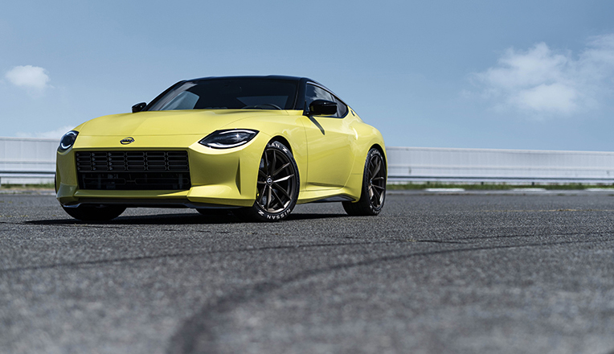
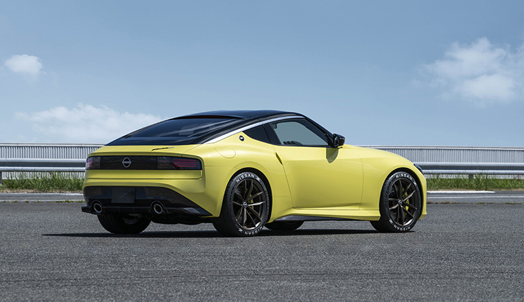
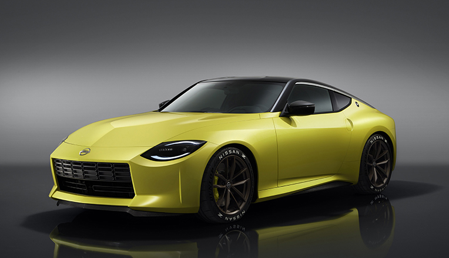
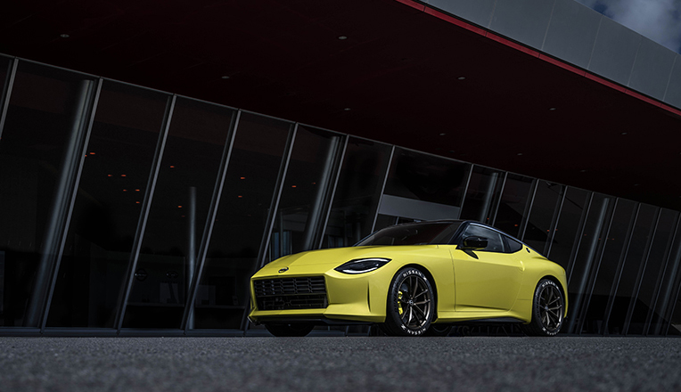
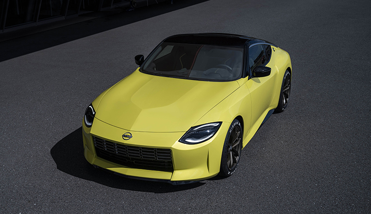
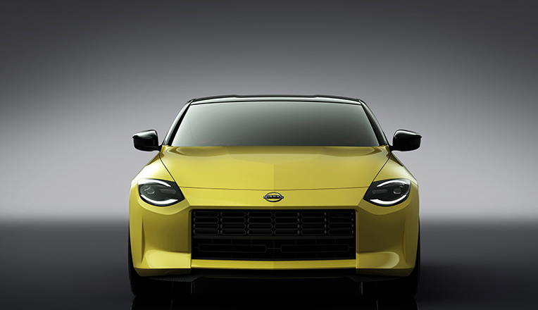

Nissan Z Proto






The Nissan Z Proto pays full respect to 50 years of Z heritage. At the same time, it's a thoroughly modern sports car. The characteristic long nose and sloped back proportions are both unmistakable reminders of the original S30. The iconic front and rear design motifs were inspired by the previous generations of the Z, such as the S30 and Z32, but with a contemporary twist. It sports a bright yellow pearlescent paint, a tribute to a popular paint scheme on both the first generation S30 and the Z32. With a black roof, the color combination feels modern and futuristic. Designed to fit driver and passenger like a glove, the Z Proto's cabin seamlessly blends modern technology with authentic Z touches.
BUY NOW